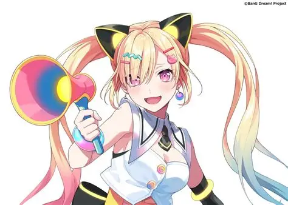
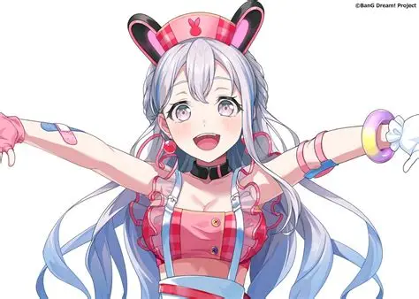
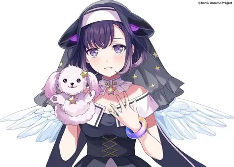
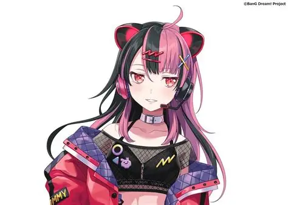
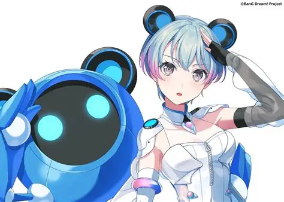

This is a web i upload my favourite character from Bandori:





| Member name | Position | Channel link |
|---|---|---|
| Nakamachi Arale | Vocalist | Arale Ch |
| Miyanaga Nonoka | Lead Guitarist | Nonoka Ch |
| Fuji Miyako | Keyboard | Miyako Ch |
| Sengoku Yuno | MP and DJ | Yuno Ch |
| Minetsuki Ritsu | Rhythm Guitarist | Ritsu Ch |